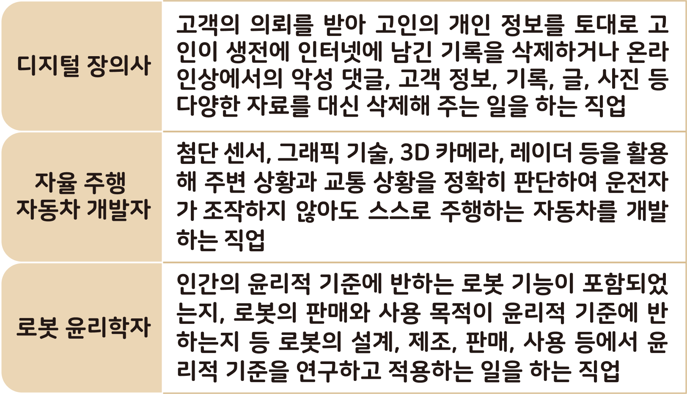

자료 읽기4차 산업 혁명 시대의 다양한 ‘신(新)직업’ 알아보기
● 다음 글을 읽고 세 가지 도덕 판단은 각각 서양의 어떤 도덕 판단 기준에 따른 것인지 연결해 보자.
4차 산업 혁명의 영향으로 미래의 일자리에 많은 변화가 생길 것으로 예상된다. 이러한 4차 산업 혁명으로 인해 일자리가 줄어들거나 사라지는 등 부정적인 영향을 받는 직업도 있지만, 반대로 일자리가 늘어나고 각광을 받는 직업도 있다. 다음은 4차 산업 혁명 시대에 유망한 직업이다.

유망(有望): 앞으로 잘될 듯한 희망이나 전망이 있다.
● 위에서 말한 직업 외에 미래에 유망한 직업에는 무엇이 있을까?
사물 인터넷 전문가, 사물 인터넷 전문가는 다양한 기기를 네트워크로 연결하여 데이터를 수집하고 분석하는 역할을 한다.